Univariate Plots
1 Introduction
In describing or characterizing the observations of an individual variable, there are three basic properties that are of interest:
- the location of observations (along the number line in general (but the geographical analogy is obvious), or how large or small the values of the individual observations are)
- the dispersion (sometimes called scale or spread) of the observations (how spread out they are along the number line, and again the geographical analogy is obvious)
- the distribution of the observations (a characterization of the frequency of occurrence of different values of the variable–do some values occurs more frequently than other values?)
Univariate plots provide one way to find out about those properties (and univariate descriptive statistics provide another).
There are two basic kinds of univariate, or one-variable-at-a-time plots,
- Enumerative plots, or plots that show every observation, and
- Summary plots, that generalize the data into a simplified representation.
2 Univariate Enumerative Plots
Enumerative plots, in which all observations are shown, have the advantage of not losing any specific information–the values of the individual observations can be retrieved from the plot. The disadvantage of such plots arises when there are a large number of observations–it may be difficult to get an overall view of the properties of a variable. Enumerative plots do a fairly good job of displaying the location, dispersion and distribution of a variable, but may not allow a clear comparison of variables, one to another.
Data files for these examples: [cities.csv] [specmap.csv]
It’s often handy to create independent directories for input data sets (e.g. .csv files), as opposed to cluttering up the working directory. For the examples here, folders along the following path were created:
- Mac: “
/Users/bartlein/Projects/geog495/data/csv/” - Windows: “
\Users\bartlein\Projects\geog495\data\csv\”
(Recall that in R, Windows paths must be specified using double backslashes (\\), i.e., “\\Users\\bartlein\\Projects\\geog495\\data\\csv\\”, or ignoring Windows conventions as “/Users/bartlein/Projects/geog495/data/csv/”
(Note that these file paths differ a little from those described in Exercise 1.)
Read the cities.csv file, using an explict path:
csvfile <- "/Users/bartlein/Projects/geog495/data/csv/cities.csv"
cities <- read.csv(csvfile)(What’s happening above is that first the string object csvfile is created by assigning (i.e. using the assignment operator <-, which is pronounced “gets”) the string /Users/bartlein/geog495/data/csv/cities.csv (the path to the file) and then this object is operated on the the read.csv() function, to create the object cities.)
2.1 Enumerative Plots (all points shown)
“Enumerative plots” are called such because they enumerate or show every individual data point (in contrast to “summary plots”.)
2.1.1 Index Plot/Univariate Scatter Diagram
Displays the values of a single variable for each observation using symbols, with values of the variable for each observation plotted relative to the observation number
# use large cities data [cities.csv]
attach(cities)
plot(Pop.2000)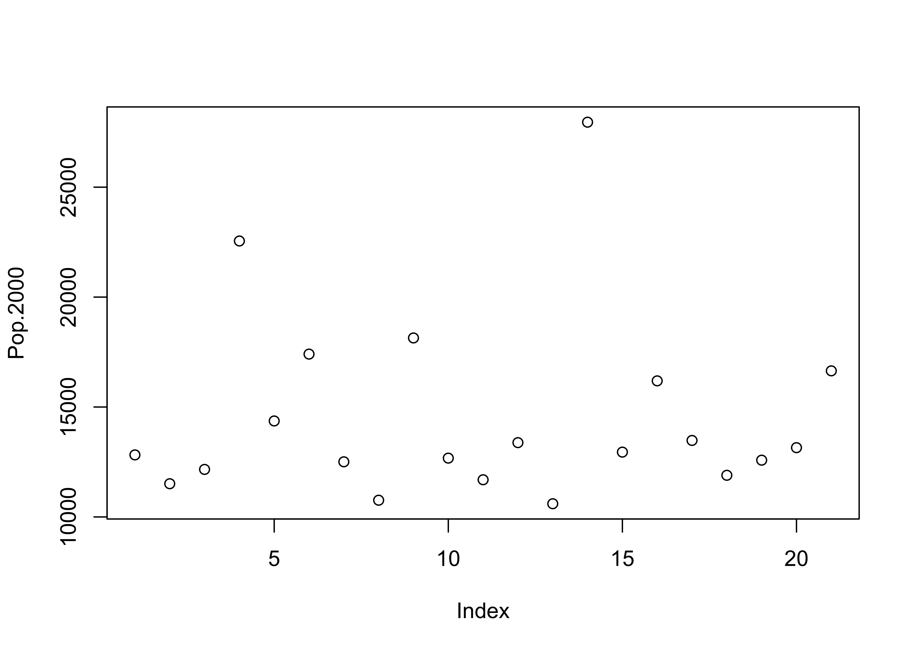
(Note the use of the attach() function. An individual variable’s “full” name is the name of the dataframe concatentated with its “short” name, with a dollar sign in between, e.g. cities$Pop.2000. The attach() function puts the data frame in the first search position and allows one to refer to a variable just by its short name (e.g. Pop.2000).
2.1.2 Y Zero High-Density Plot
Displays the values of a single variable plotted as thin vertical lines
plot(Pop.2000, type="h")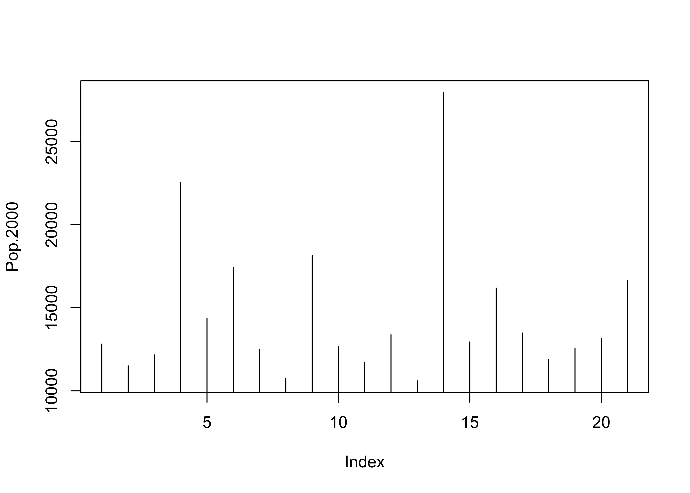
2.2 Other plot types using plot()
A variety of different versions of the standard univariate plot generated with the plot() function can be generated using the type= argument.
type = "l", "b", "o", "s", or "S"
It’s good practice when done with a data set to detach it:
detach(cities)2.2.1 Time Series Plots
When data are in some kind of order (as in time), index values contain some useful information. Read and attach the specmap.csv file, and then plot the delta-O18 (oxygen isotope) values.
# use Specmap delta-O18 data
csvfile <- "/Users/bartlein/Projects/geog495/data/csv/specmap.csv"
specmap <- read.csv(csvfile)
attach(specmap)
plot(O18)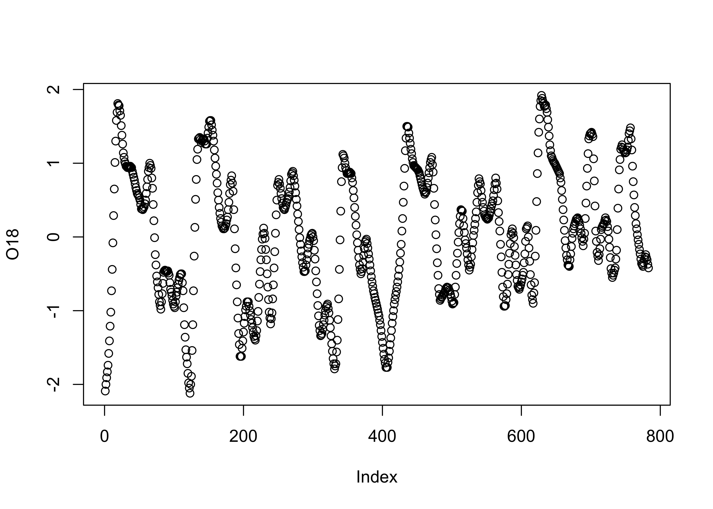
In this data set, the large negative values indicate warm/less-ice conditions, and so it would be more appropriate to plot the values on an inverted y-axis, using the ylim arguement.
plot(O18, ylim=c(2.5,-2.5)) # invert y-axis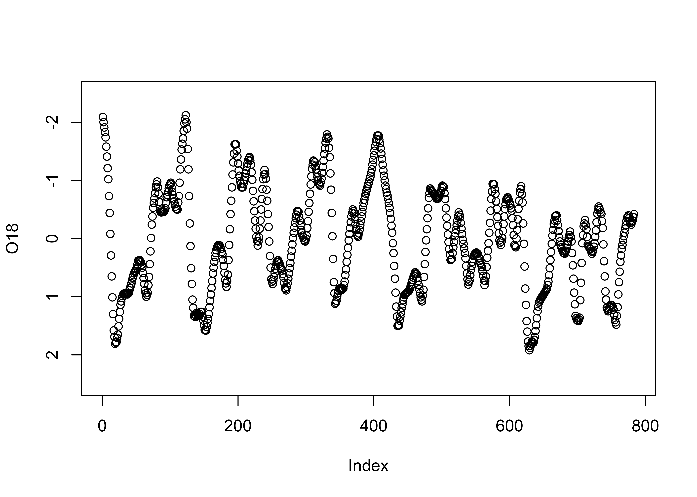
2.2.2 Strip Plot/Strip Chart (univariate scatter diagram)
Displays the values of a single variable as symbols plotted along a line
stripchart(O18)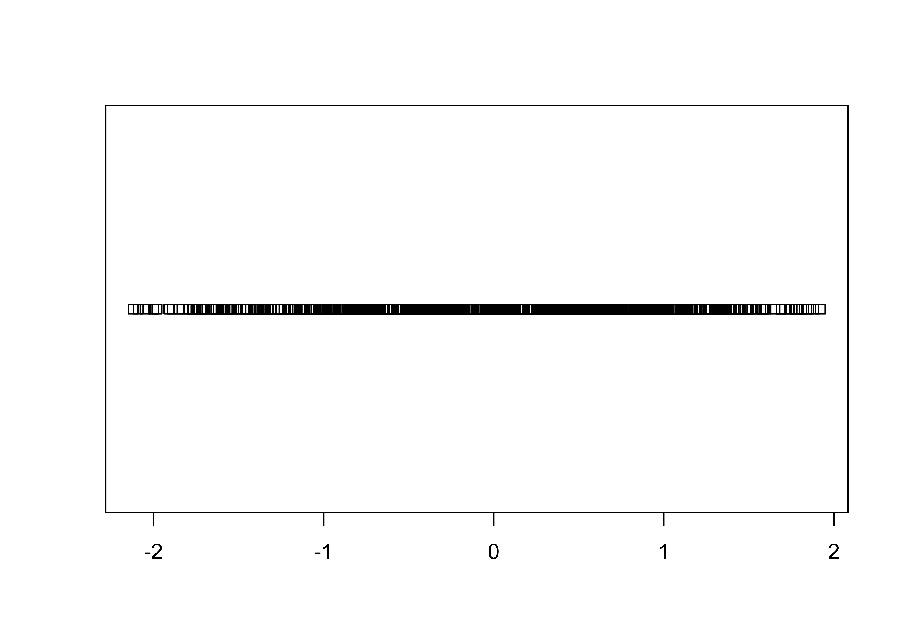
stripchart(O18, method="stack") # stack points to reduce overlap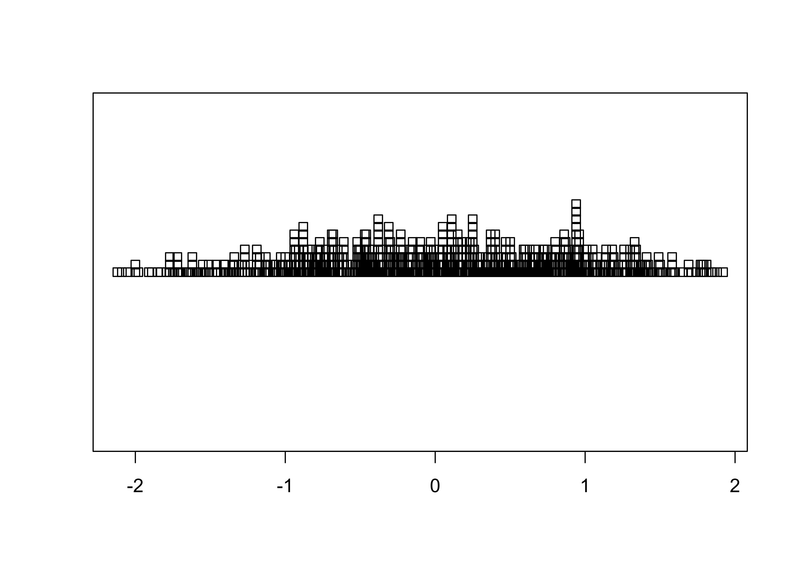
detach(specmap) # done with the specmap data set2.2.3 Dot Plot/Dot Chart
The Cleveland dot plot displays the values of a single variable as symbols plotted along a line, with a separate line for each observation. (Note that we reattach the data set first.)
attach(cities)
dotchart(Pop.2000, labels=City)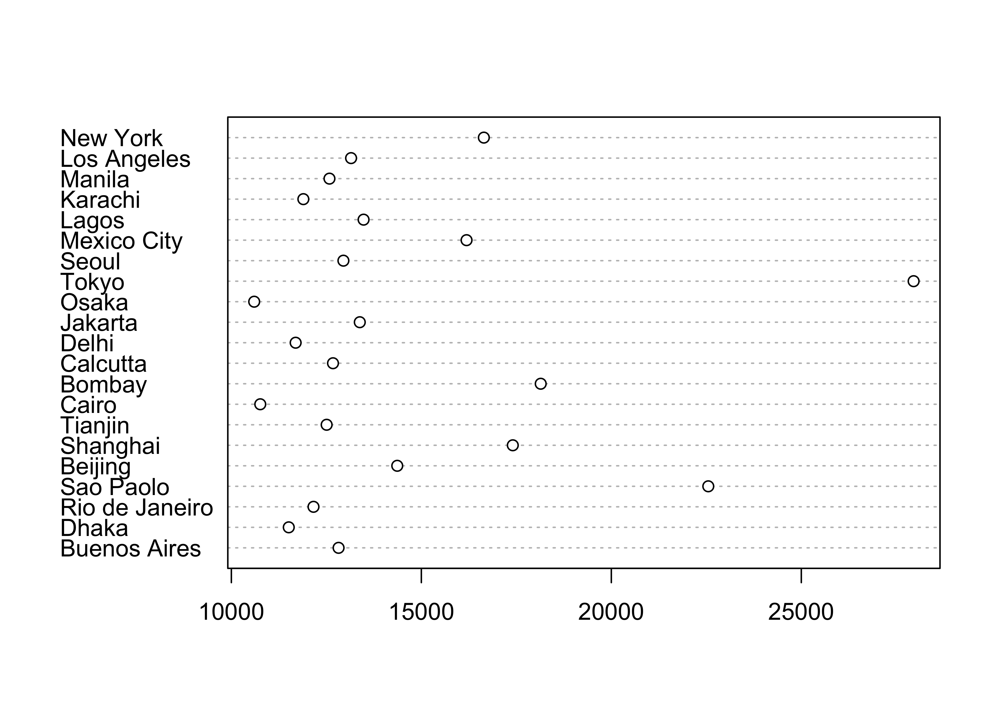
An alternative version of this plot, and the one most frequently used, can be constructed by sorting the rows of the data table. Sorting can be tricky–it is easy to completely rearrange a data set by sorting one variable and not the others. It is often better to leave the data unsorted, and to use an auxiliary variable (in this case index) to record the rank-order of the variable being plotted (in this case Pop.2000), and the explicit vector-element indexing of R to arrange the data in the right order:
index <- order(Pop.2000)
dotchart(Pop.2000[index], labels=City[index])
This example shows how to index or refer to specific values of a variable by specifying the subscripts of the observations involved (in square brackets […]).
Once you’re done with a data set, it’s good to “detach” it to avoid conflict among variables from different data sets that might have the same name.
detach(specmap)
detach(cities)3 Univariate Summary Plots
Summary plots display an object or a graph that gives a more concise expression of the location, dispersion, and distribution of a variable than an enumerative plot, but this comes at the expense of some loss of information: In a summary plot, it is no longer possible to retrieve the individual data value, but this loss is usually matched by the gain in understanding that results from the efficient representation of the data. Summary plots generally prove to be much better than the enumerative plots in revealing the distribution of the data.
Data files for these examples (download to working directory): [specmap.csv] [scanvote.csv]
Read the two data sets if they are not already in the workspace or environment. The scanvote data set will be explained below.
csvfile <- "/Users/bartlein/Projects/geog495/data/csv/specmap.csv"
specmap <- read.csv(csvfile)
csvfile <- "/Users/bartlein/Projects/geog495/data/csv/scanvote.csv"
scanvote <- read.csv(csvfile)3.1 Summary Plots
3.1.1 Histograms
Histograms are a type of bar chart that displays the counts or relative frequencies of values falling in different class intervals or ranges.
# use Specmap O-18 data [specmap.csv]
attach(specmap)## The following objects are masked from specmap (pos = 3):
##
## Age, Insol, O18hist(O18)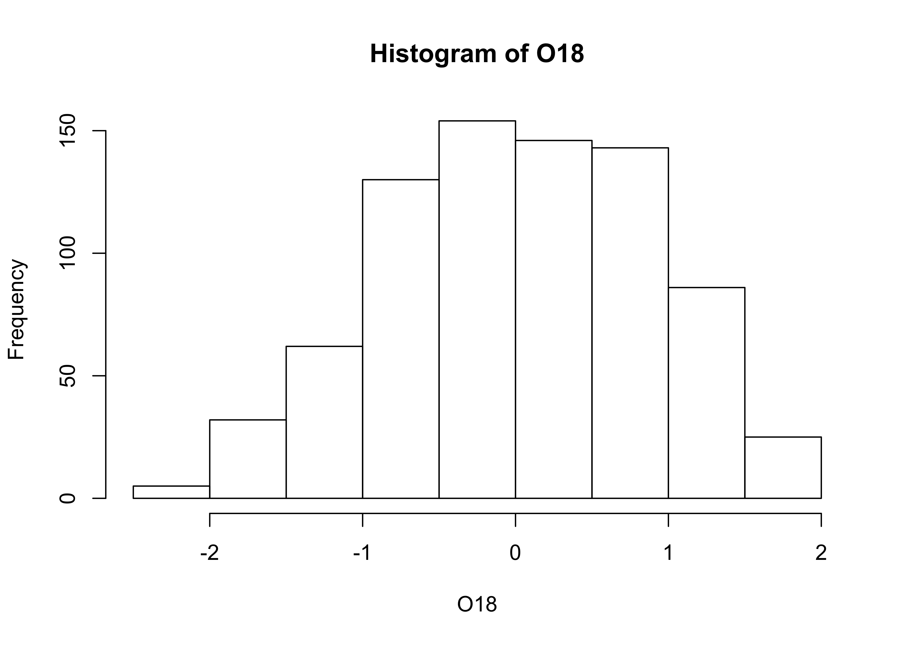
The overall impression one gets about the distribution of a variable depends somewhat on the way the histogram is constructed: fewer bars give a more generalized view, but may obscure details of the distribution (the existence of a bimodal distribution, for example), while more may not generalize enough. Plot a second histogram with 20 bins using the breaks arguement:
hist(O18, breaks=20)
3.1.2 Density Plots (or Kernel Plots/Smoothed Histograms)
A density plot is a plot of the local relative frequency or density of points along the number line or x-axis of a plot. The local density is determined by summing the individual “kernel” densities for each point. Where points occur more frequently, this sum, and consequently the local density, will be greater. Density plots get around some of the problems that histograms have, but still require some choices to be made.
[histogram smoothing illustration]
[different kernels]
Density plot of the O18 data. Note that in this example, an object O18.density is created by the density() function, and then plotted using the plot() function.
O18.density <- density(O18)
plot(O18.density)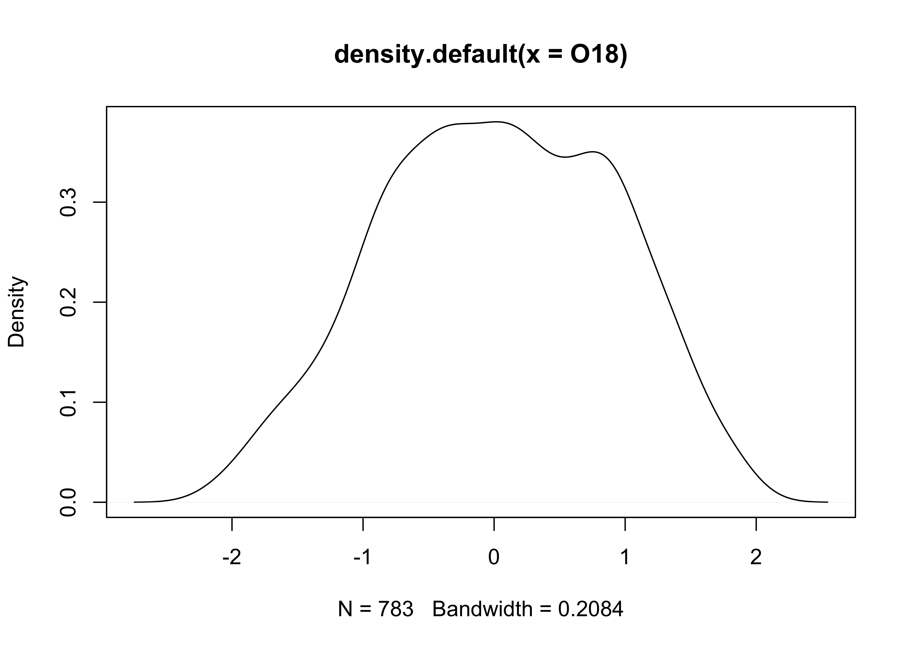
Plots with both a histogram and density line can be created:
O18.density <- density(O18)
hist(O18, breaks=40, probability=TRUE)
lines(O18.density)
rug(O18)
Note the addtion of the “rug” plot at the bottom (which is an enumerative plot).
detach(specmap)3.1.3 Boxplot (or Box-and-Whisker Plot)
A boxplot characterizes the location, dispersion and distribution of a variable by construction a box-like figure with a set of lines (whiskers) extending from the ends of the box. The edges of the box are drawn at the 25th and 75th percentiles of the data, and a line in the middle of the box marks the 50th percentile. The whiskers and other aspects of the boxplot are drawn in various ways.
# use Scandinavian EU-preference vote data
attach(scanvote)
boxplot(Pop)
Note that the plot looks pretty odd, a function of the distribution of the population data. Typically, the log (base 10) of population data is more informative:
boxplot(log10(Pop))
![[histogram smoothing illustration]](http://geog.uoregon.edu/GeogR/images/hist_smooth.gif){kind=link}
![[different kernels]](http://geog.uoregon.edu/GeogR/images/kernel_type.gif){kind=link}
3.2 An Aside on Reference Distributions
There are a number of “theoretical” reference distributions that arise in data analysis that can be compared with observed or empirical distributions (i.e. of a set of observations of a particular variable) and used in other ways. One of the more frequently used reference distributions is the normal distribution (which arises frequently in practice owing to the Central Limit Theorem).
Theoretical distributions are represented by their:
- probability density functions (PDFs) which illustrate the probability (p) of observing different values of a particular variable
- cumulative distribution functions (CDFs) which illustrate the probability (p) of observing values less than or equal to a specific value of the variable.
- inverse cumulative distribution functions which illustrate the particular value of a variable that is equaled or exceeded (1-p)x100 percent of the time.
For the standard normal distribution (with mean of 0 and a standard deviation of 1), the PDF and CDF can be displayed as follows:
z <- seq(-3.0,3.0,.05)
pdf.z <- dnorm(z) # get probability density function
plot(z, pdf.z)
cdf.z <- pnorm(z) # get cumulative distribution function
plot(z, cdf.z)
and the inverse cumulative distribution function as follows:
p <- seq(0,1,.01)
invcdf.z <- qnorm(p) # get inverse cumulative distibution function
plot(p,invcdf.z)
3.2.1 QQ Plot (or QQ Normal Plot)
A quantile plot is a two-dimensional graph where each observation is shown by a point, so strictly speaking, a QQ plot is an enumerative plot. The data value for each point is plotted along the vertical or y-axis, while the equivalent quantile (e.g. a percentile) value is plotted along the horizontal or x-axis. The quantiles plotted along the x-axis could be empirical ones, like the percentile equivalents or rank for each value, or they could be theoretical ones corresponding to the “p-values” of a reference distribution (e.g. a normal distribution) with the same parameters as the variable being examined. In practice, the shape of the QQ plot is the issue:
[a variety of histograms and QQ Plots]
![[a variety of histograms and QQ Plots]](http://geog.uoregon.edu/GeogR/images/qqplots.gif){kind=link}
The qqnorm plot plots the data values along the y-axis, and p-values of the normal distribution along the x-axis. qqline adds a straight line that passes through the first and third quartiles (25th and 75th percentiles) and can be used to assess (a) the overall departure of the observed distribution from a normal distribution with the same parameters (mean and standard deviation) as the observations, and (b) outliers or unsual points.
qqnorm(Pop)
qqline(Pop)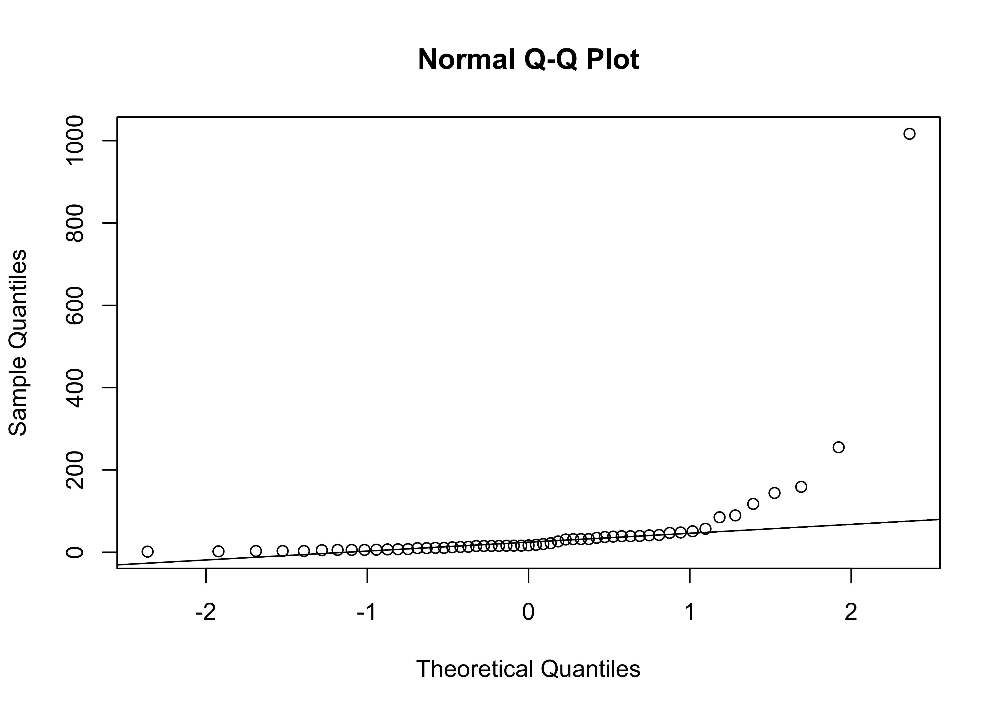
qqnorm(log10(Pop))
qqline(log10(Pop))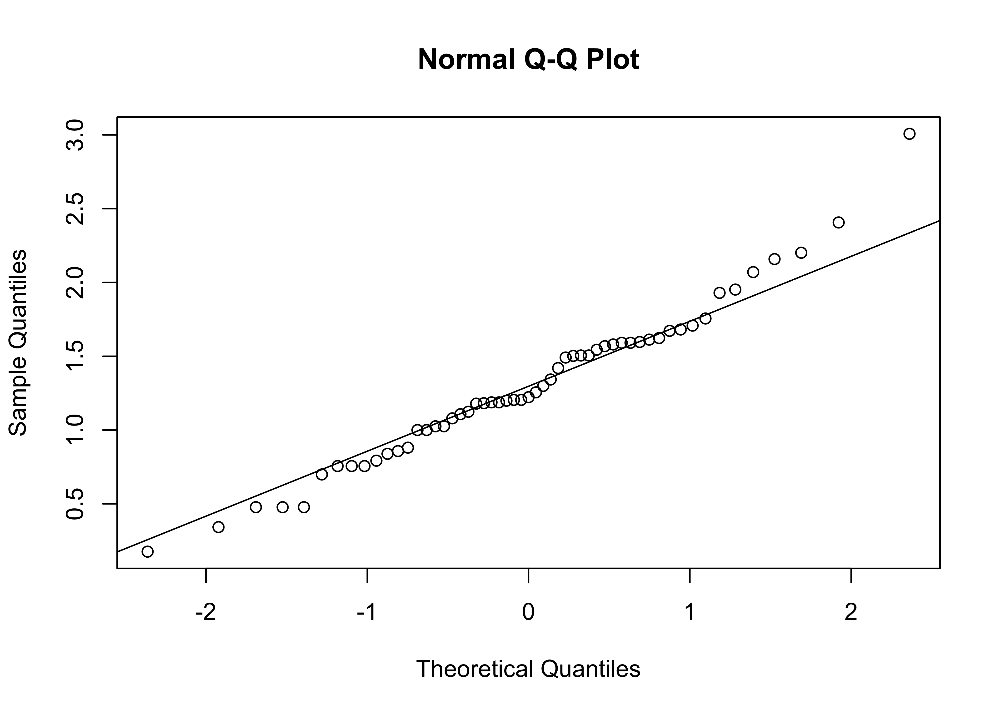
Clean up
detach(scanvote)4 Readings
- Owen (The R Guide): Ch. 4 & 5, section 6.3
- Kuhnert & Venebles (An Introduction…): p. 61-76
- Rossiter (Introduction … ITC): Ch. 2; sections 3.1-3.3